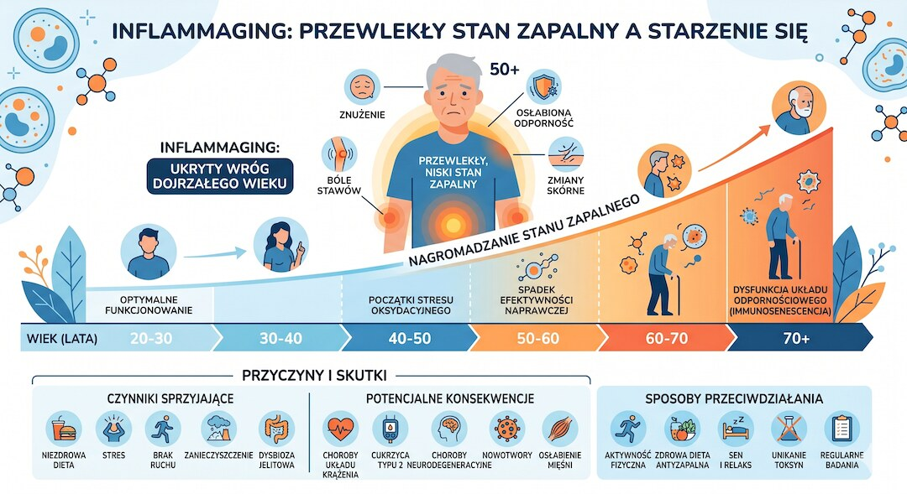
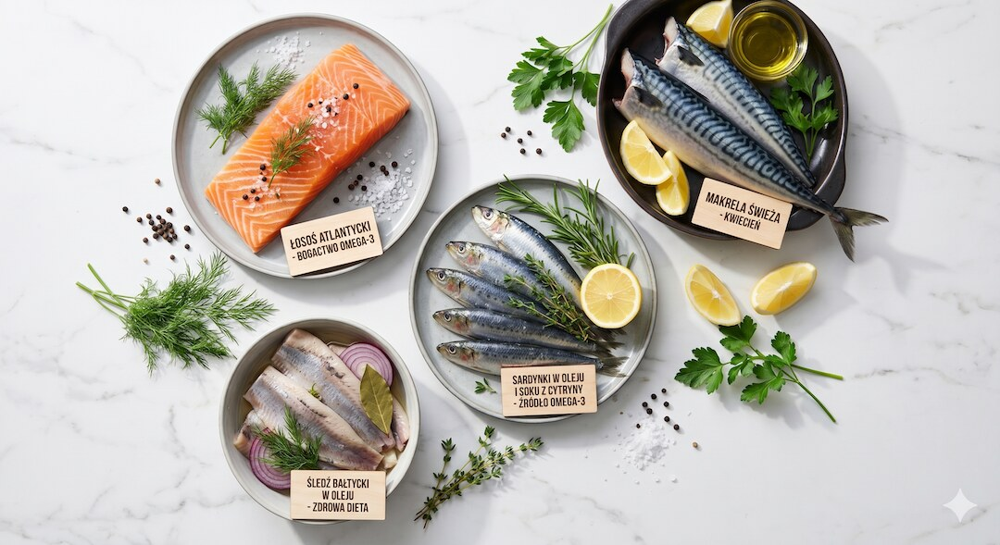
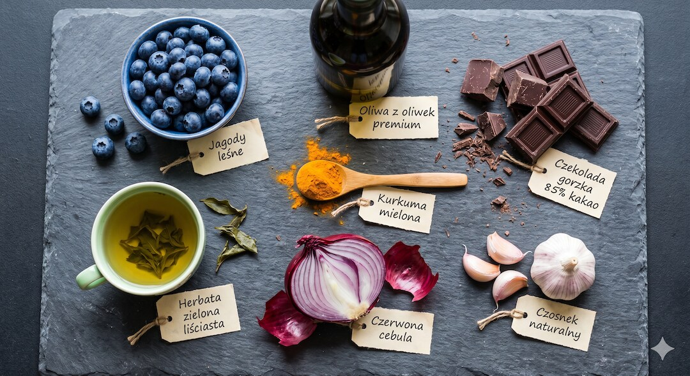
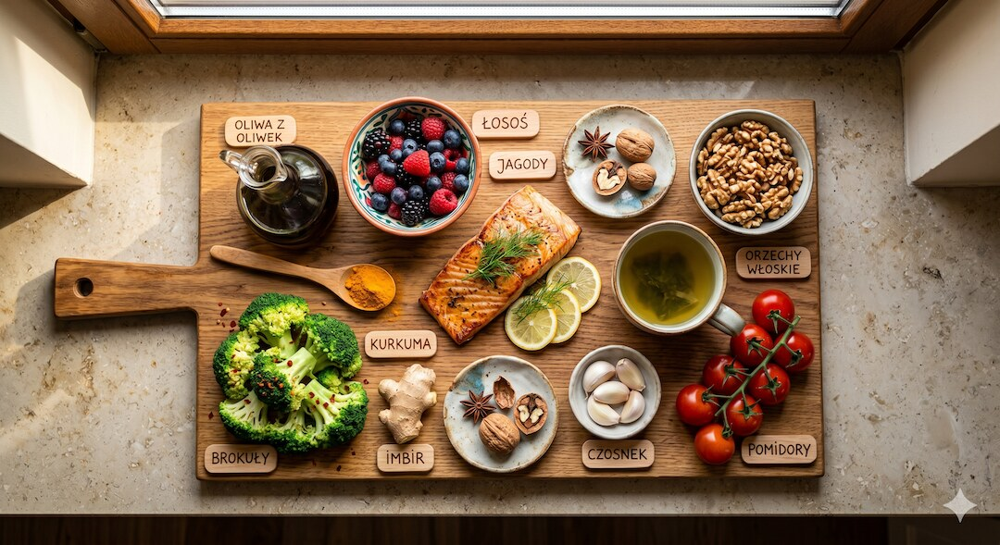
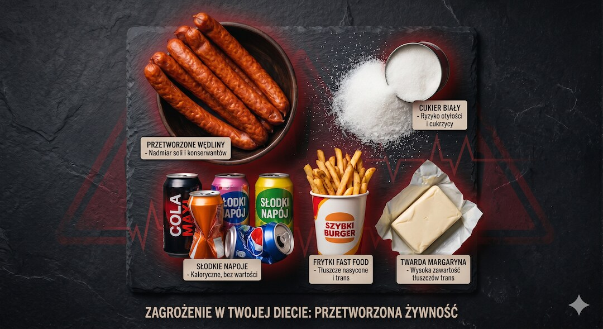
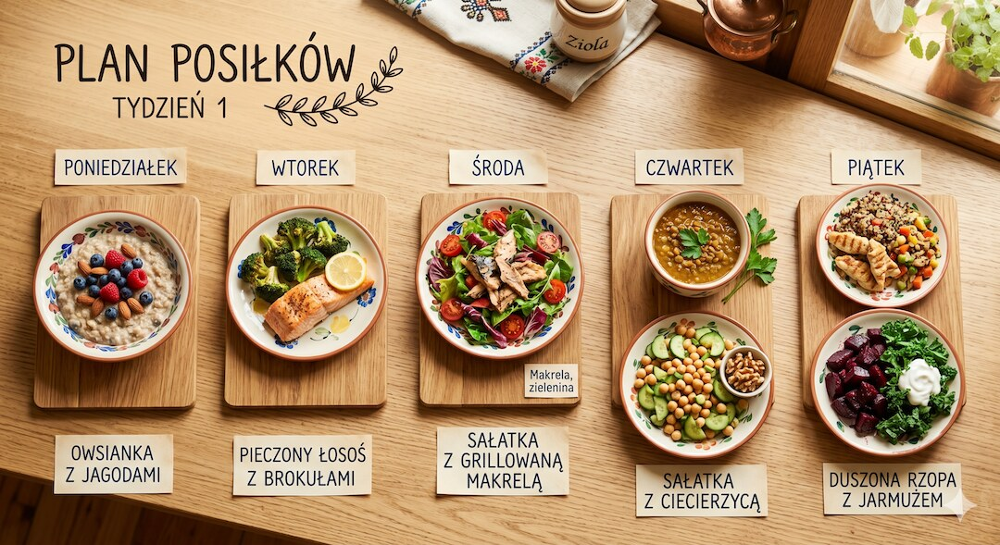

Przewlekły stan zapalny po 50-tce to nie teoria — to zmierzony fakt. CRP, IL-6, TNF-α rosną z wiekiem nawet bez żadnej choroby. Naukowcy mają na to nawet nazwę: inflammaging. I tu dobra wiadomość — dieta potrafi ten proces realnie wyhamować. Poniżej masz konkretną listę produktów i gotowy jadłospis na 7 dni. Oparty na badaniach, nie na trendach.
Szybka odpowiedź
Aby wyhamować przewlekły stan zapalny po 50-tce, należy wdrożyć dietę śródziemnomorską bogatą w ryby morskie dostarczające kwasów omega-3 oraz oliwę z oliwek extra virgin, ponieważ u osób po 50 roku życia regularne spożywanie tych produktów wraz z jagodami pozwala obniżyć poziom wskaźnika CRP już po 4 tygodniach.
Kluczowe wnioski
- Kwasy Omega-3 (EPA i DHA) z tłustych ryb hamują produkcję prostaglandyn zapalnych — pierwsze efekty są widoczne już po 6–8 tygodniach.
- Polifenole z oliwy extra virgin, jagód i zielonej herbaty blokują szlak NF-κB — jeden z głównych włączników stanu zapalnego w ciele.
- Kurkumina z kurkumy działa, ale tylko z czarnym pieprzem — piperyna zwiększa jej wchłanialność nawet 20-krotnie.
- Tłuszcze trans, cukry i przetworzone węglowodany nakręcają zapalenie. Ich ograniczenie obniża CRP szybciej niż większość innych zmian.
Czym jest 'inflammaging' i dlaczego dotyczy każdego po 50-tce?
Po pięćdziesiątce układ odpornościowy zaczyna się zachowywać trochę jak czujnik alarmu z uszkodzonym wyłącznikiem — reaguje, ale nie potrafi się wyłączyć. Po każdej infekcji zostaje cichy, niski poziom aktywności zapalnej. Naukowcy nazwali to inflammagingiem . Podwyższone CRP czy IL-6 korelują z wyższym ryzykiem chorób sercowo-naczyniowych, cukrzycy typu 2, choroby zwyrodnieniowej stawów i demencji. To nie są abstrakcje — to liczby w badaniach krwi.
To nie jest powód do paniki. To powód do działania. Dieta należy do najlepiej zbadanych narzędzi, które ten proces realnie spowalniają — bez recepty i bez skutków ubocznych leków. Jeśli ciekawi Cię, jak zapalenie wpływa na regenerację mięśni, zajrzyj do artykułu o tym, jak działają kreatyna i białko po 50-tce.

Które kwasy Omega-3 fachowo działają i skąd je brać?
Nie wszystkie Omega-3 robią to samo. Kwasy ALA z lnu czy orzechów to tylko prekursory — ich zamiana na aktywne EPA i DHA wynosi w organizmie kilka procent. To właśnie EPA i DHA działają bezpośrednio: hamują enzym COX-2 i ograniczają produkcję prostaglandyn odpowiedzialnych za ból i obrzęk stawów. Różnica jest zasadnicza.
Najlepsze źródła to tłuste ryby morskie: łosoś, makrela, sardynki, śledź, halibut. Metaanaliza z badań nad RZS wykazała, że EPA+DHA w dawce 2,7 g/dobę przez minimum 3 miesiące wyraźnie zmniejsza ból stawów. Dwie, three porcje ryb tygodniowo pozwalają zbliżyć się do tych wartości bez żadnych suplementów.
Na diecie roślinnej realną alternatywą są algi morskie — to z nich ryby pozyskują DHA, więc jest to źródło bez pośrednika. Więcej o roślinnych tłuszczach i białku znajdziesz w artykule o dieta po 50-tce.
- Łosoś atlantycki (200 g): ~2,5 g EPA+DHA
- Makrela wędzona (100 g): ~2,2 g EPA+DHA
- Sardynki w oleju (100 g): ~1,5 g EPA+DHA
- Śledź marynowany (100 g): ~1,7 g EPA+DHA
- Olej z alg (suplement, 1 kapsułka): 0,5–1 g DHA

Polifenole: które produkty mają ich naprawdę dużo?
Polifenole to związki roślinne, które w badaniach klinicznych konsekwentnie blokują szlaki zapalne — głównie NF-κB. To nie jest jeden związek, lecz rodzina ponad 8000 substancji. W praktyce kilka grup produktów dostarcza ich najwięcej i ma za sobą najlepsze dowody.
Oliwa z oliwek extra virgin zawiera oleokantal — naturalny hamulec COX-1 i COX-2, działający podobnie do ibuprofenu, tyle że w dużo mniejszych stężeniach. Porcja 50 ml oliwy to dawka porównywalna z około 10% dawki analgetycznej ibuprofenu. W diecie śródziemnomorskiej taka ilość trafia na talerz codziennie — i to może wyjaśniać część jej skuteczności.
Jagody, borówki i czarne porzeczki są pełne antocyjanów, które poprawiają kondycję naczyń krwionośnych i obniżają IL-6. Zielona herbata dostarcza EGCG — w kilku badaniach z randomizacją obniżał CRP u osób z nadwagą. Ciemna czekolada (min. 70% kakao) i czerwone winogrona uzupełniają listę dzięki resweratrolowi i flawonolom.
- Oliwa z oliwek extra virgin — oleokantal, hydroksytyrozol
- Jagody i borówki — antocyjany
- Zielona herbata — EGCG (galusan epigallokatechiny)
- Ciemna czekolada 70%+ — flawonole
- Cebula i por — kwercetyna
- Kurkuma — kurkumina (koniecznie z czarnym pieprzem)

Co jeść na stany zapalne w stawach? Poznaj kompletną listę?
Ból stawów to jeden z głównych powodów, dla których osoby po pięćdziesiątce zaczynają szukać informacji o diecie. I dobrze — badania pokazują, że dieta naprawdę moduluje zapalenie w tkance chrzęstnej i błonie maziowej. Nie tylko przez Omega-3. Liczy się cały wzorzec tego, co jesz każdego dnia.
Witamina D — choć technicznie hormon — reguluje układ odpornościowy i wycisza cytokiny zapalne. Jej niedobór w Polsce dotyczy większości dorosłych przez 6–8 miesięcy w roku i koreluje z nasileniem bólu stawów. Najlepsze źródła w diecie to tłuste ryby i żółtka jaj, ale suplementacja bywa konieczna. Piszemy o tym szerzej w artykule o suplementacji po 50-tce.
Imbir zawiera gingerole i shogaole — w kilku kontrolowanych badaniach ograniczały ból stawów kolanowych skuteczniej niż placebo, a w jednym badaniu porównywalnie do ibuprofenu, przy mniejszym ryzyku podrażnienia żołądka. Porcja to 1–2 g proszku dziennie albo kawałek świeżego korzenia. Brokuły, pietruszka i seler dostarczają luteoliny i apigeniny — mało znanych flawonoidów z dobrze potwierdzonym działaniem.
- Tłuste ryby morskie (łosoś, makrela, śledź, sardynki) — EPA i DHA
- Oliwa z oliwek extra virgin — oleokantal
- Jagody, czarne porzeczki, czereśnie — antocyjany
- Kurkuma + czarny pieprz — kurkumina z piperyną
- Imbir świeży lub suszony — gingerole, shogaole
- Brokuły, jarmuż, szpinak — luteolina, witamina K2
- Orzechy włoskie — ALA, witamina E
- Zielona herbata — EGCG
- Czosnek — allicyna
- Żółtka jaj — witamina D, luteina
- Wiśnie i czereśnie — antocyjany, kwas elagowy
- Pomidory (szczególnie gotowane) — likopen

Których produktów unikać, żeby nie nakręcać stanu zapalnego?
Dieta przeciwzapalna to nie tylko to, co dodajesz — to też to, co odejmujesz. Tłuszcze trans, wciąż obecne w niektórych margarynach i smażonym fast foodzie, włączają szlak NF-κB i podnoszą IL-6 nawet przy małym spożyciu. Ich wyeliminowanie to jeden z najszybszych sposobów na obniżenie CRP.
Cukry proste i przetworzone węglowodany powodują skoki glukozy, które napędzają produkcję AGE — związków uszkadzających białka chrząstki i śródbłonek naczyń. Badanie PREDIMED wykazało, że zastąpienie białego pieczywa pełnoziarnistym odpowiednikiem obniżyło CRP średnio o 14%.
Alkohol — zwłaszcza piwo i mocniejsze trunki — dostarcza do krwiobiegu prozapalne endotoksyny jelitowe (LPS). Małe ilości czerwonego wina były neutralne lub lekko ochronne w badaniach śródziemnomorskich, ale wytyczne WHO nie wyznaczają żadnego bezpiecznego progu. Przetworzone czerwone mięso (kiełbasy, wędliny) zawiera związki nitrowe i hemowe żelazo, które w jelitach działa prozapalnie.
- Tłuszcze trans — twarde margaryny, frytki i fast food
- Cukry proste — słodzone napoje, słodycze, białe pieczywo
- Przetworzone mięso — kiełbasy, parówki, wędliny z długą listą składników
- Nadmiar oleju słonecznikowego i sojowego — wysokie Omega-6
- Alkohol w dużych ilościach — prozapalne LPS jelitowe
- Żywność ultraprzetwarzana — emulgatory zaburzające mikrobiom

Tygodniowy jadłospis przeciwzapalny po 50-tce — jak wygląda w praktyce?
Teoria bez konkretnego planu to za mało. Poniższy jadłospis na 7 dni opiera się na wzorcu śródziemnomorskim i diecie MIND. Uwzględnia polskie produkty dostępne w normalnym sklepie i jest obliczony dla osoby ważącej 70–85 kg z umiarkowaną aktywnością. Kaloryczność to ok. 1800–2000 kcal dziennie — możesz ją regulować porcjami.
Poniedziałek: Śniadanie: owsianka na mleku roślinnym z borówkami i orzechami włoskimi, zielona herbata. Obiad: łosoś pieczony z brokułami i kaszą gryczaną, skropiony oliwą. Kolacja: sałatka z rukolą, pomidorami, czarnymi oliwkami i fetą.
Wtorek: Śniadanie: jajka sadzone na oliwie z żytnim pieczywem i plasterkami awokado. Obiad: zupa jarzynowa z kurkumą i imbirem, pierś z indyka. Kolacja: jogurt naturalny z siemieniem lnianym i garścią jagód.
Środa: Śniadanie: smoothie ze szpinaku, banana, imbiru i jagód. Obiad: makrela wędzona z sałatką z kiszonych ogórków i cebuli. Kolacja: hummus z marchewką i rzodkiewką.
Czwartek: Śniadanie: żytnie pieczywo z pastą z sardynek i pietruszki. Obiad: soczewica czerwona z kurkumą i kolendrą, ryż brązowy. Kolacja: sałatka z jarmużu z granatem i orzechami.
Piątek: Śniadanie: owsianka z mrożonymi wiśniami i cynamonem. Obiad: śledź w oleju lnianym z ziemniakami gotowanymi w skórce. Kolacja: zupa miso z tofu i wodorostami — dobry pretekst do eksperymentu.
Sobota: Śniadanie: omlet ze szpinakiem, czosnkiem i pomidorami. Obiad: pstrąg pieczony z cytryną i koperkiem, sałatka grecka. Kolacja: 2–3 kostki ciemnej czekolady 85% i garść migdałów.
Niedziela: Śniadanie: grzanki z żytniego chleba z awokado, łososiem wędzonym i kaparami. Obiad: leczo z papryką, pomidorami i cebulą, brązowy ryż. Kolacja: sałatka z rukoli z figami i orzechami włoskimi, oliwa i ocet balsamiczny.
Ten jadłospis jest szkieletem, nie recepturą do przestrzegania co do grama. Chodzi o wzorzec: co najmniej 2–3 porcje tłustych ryb w tygodniu, warzywa w różnych kolorach każdego dnia, oliwa zamiast masła, zielona herbata zamiast słodzonych napojów. Jeśli szukasz ćwiczeń, które wzmacniają efekty diety, zajrzyj do poradnika o ćwiczeniach na stawy po pięćdziesiątce.

Czy suplementy zastąpią dietę w walce z zapaleniem?
Krótka odpowiedź: nie. Dłuższa: w kilku przypadkach suplementacja ma sens jako uzupełnienie, ale nie jako zamiennik jedzenia. Omega-3 w kapsułkach to dobra opcja, gdy naprawdę nie chcesz lub nie możesz jeść ryb — biodostępność z całej ryby jest nieco wyższa, ale różnica nie jest dramatyczna. Kurkumina bez piperyny wchłania się bardzo słabo — sprawdź skład zanim zapłacisz.
Witamina D3 w dawce 1000–2000 IU dziennie (najlepiej z witaminą K2) to jedno z niewielu uzupełnień z solidnymi podstawami dla polskiej populacji po 50-tce — szczególnie od września do marca. Resweratrol, spirulina i mnóstwo modnych suplementów wyglądają obiecująco w badaniach laboratoryjnych, ale mają bardzo słabe lub niejednoznaczne wyniki na ludziach. Zanim wydasz pieniądze, warto zapytać lekarza i zajrzeć do aktualnych przeglądów.

Najczęściej zadawane pytania
Jak dopasować produkty przeciwzapalne w diecie?
Najlepiej zbadane produkty przeciwzapalne to tłuste ryby morskie, oliwa z oliwek extra virgin, owoce jagodowe, zielona herbata, orzechy włoskie oraz przyprawy takie jak kurkuma i imbir. Składniki te dostarczają kwasów omega-3 i polifenoli, które skutecznie hamują szlaki zapalne w organizmie i obniżają poziom CRP.
Czy dieta śródziemnomorska pomaga na stawy?
Dieta śródziemnomorska posiada najsilniejsze dowody naukowe potwierdzające jej skuteczność w łagodzeniu stanów zapalnych stawów. Głównymi filarami tego modelu żywienia są tłuste ryby morskie spożywane dwa razy w tygodniu, oliwa extra virgin, świeże warzywa, owoce oraz orzechy, przy jednoczesnym unikaniu cukru i żywności wysoko przetworzonej.
Jak szybko dieta przeciwzapalna przynosi efekty?
Pierwsza poprawa parametrów krwi i obniżenie wskaźnika CRP następuje zazwyczaj po 4 do 6 tygodniach stosowania diety przeciwzapalnej. Na zauważalne zmniejszenie bólu i sztywności stawów wywołane działaniem kwasów omega-3 z ryb lub suplementów trzeba jednak poczekać dłużej, zwykle od 8 do 12 tygodni.
Czy kurkuma skutecznie łagodzi stany zapalne?
Tak, kurkuma wykazuje silne właściwości przeciwzapalne, pod warunkiem stosowania jej razem z piperyną zawartą w czarnym pieprzu, która zwiększa wchłanianie kurkuminy aż dwudziestokrotnie. Badania kliniczne dowodzą, że dawka jednego grama kurkuminy z piperyną dziennie potrafi zmniejszyć ból stawów równie skutecznie, jak popularne leki przeciwbólowe.
Jakie produkty wywołują zapalenie i jak ich unikać?
Aby nie nasilać przewlekłego stanu zapalnego, należy wyeliminować z diety tłuszcze trans zawarte w fast foodach i twardych margarynach. Trzeba również mocno ograniczyć cukry proste, słodzone napoje gazowane, żywność wysoko przetworzoną oraz wyroby wędliniarskie, ponieważ zawierają one związki wyzwalające odpowiedź zapalną organizmu.
Czy Omega-3 w kapsułkach zastąpi ryby?
Suplementy dostarczające kwasy omega-3 wykazują zbliżone działanie kliniczne do kwasów pochodzących ze spożywania tłustych ryb. Choć naturalna biodostępność z ryb jest nieco wyższa, dobrej jakości preparaty skutecznie uzupełniają niedobory. Osoby niejedzące ryb mogą wybrać olej z alg morskich będący bezpośrednim źródłem kwasów EPA i DHA.
Źródła
- Calder PC (2017) — Omega-3 fatty acids and inflammatory processes: from molecules to man. Biochemical Society Transactions
- Kremer JM et al. (1995) — Effects of high-dose fish oil on rheumatoid arthritis. Annals of Internal Medicine
- Oliviero F et al. (2015) — Anti-inflammatory effects of polyphenols in arthritis. Journal of the Science of Food and Agriculture
- Esposito K et al. (2004) — Effect of a Mediterranean-style diet on endothelial dysfunction and markers of vascular inflammation. JAMA
- Kuptniratsaikul V et al. (2014) — Efficacy and safety of Curcuma domestica extracts versus ibuprofen. Clinical Interventions in Aging
- Grzanna R et al. (2005) — Ginger — an herbal medicinal product with broad anti-inflammatory actions. Journal of Medicinal Food
- Estruch R et al. (2013) — PREDIMED study — Primary prevention of cardiovascular disease with a Mediterranean diet. NEJM
- Minihane AM et al. (2015) — Low-grade inflammation, diet composition and health: current research evidence and its translation. British Journal of Nutrition
- Sheppard KW i Cheatham CL (2017) — Oleocanthal in olive oil: relationship to anti-inflammatory effect. ISRN Nutrition
- Franceschi C et al. (2000) — Inflammaging: an evolutionary perspective on immunosenescence. Annals of the New York Academy of Sciences
Uwaga: Artykuł ma charakter informacyjny i edukacyjny. Nie zastępuje konsultacji lekarskiej, diagnozy ani leczenia.